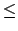
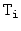
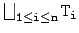
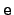
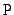
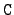
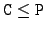
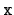

case <expr0> of
<id1> : <type1> => <expr1>;
. . .
<idn> : <typen> => <exprn>;
esac
Case expressions provide runtime type tests on objects.
First, expr0 is evaluated and its dynamic type C noted
(if expr0 evaluates to void a run-time error is produced).
Next, from among the branches the branch with the least type
<typek> such that C  <typek> is selected. The identifier
<idk> is bound to the
value of <expr0> and the expression <exprk> is evaluated.
The result of the case is the value of <exprk>.
If no branch can be selected for evaluation, a run-time error is generated.
Every case expression must have at least one branch.
For each branch, let  be the static type of <expri>. The static type of a case expression is . The identifier id introduced by a branch of a case hides any variable or attribute definition for id visible in the containing scope.
The case expression has no special construct for a ``default'' or ``otherwise'' branch. The same affect is achieved by including a branch
x : Object => ...because every type is to Object.
The case expression provides programmers a way to insert explicit runtime type checks in situations where static types inferred by the type checker are too conservative. A typical situation is that a programmer writes an expression  and type checking infers that has static type . However, the programmer may know that, in fact, the dynamic type of is always  for some . This information can be captured using a case expression:
case e of x : C => ...In the branch the variable  is bound to the value of but has the more specific static type .